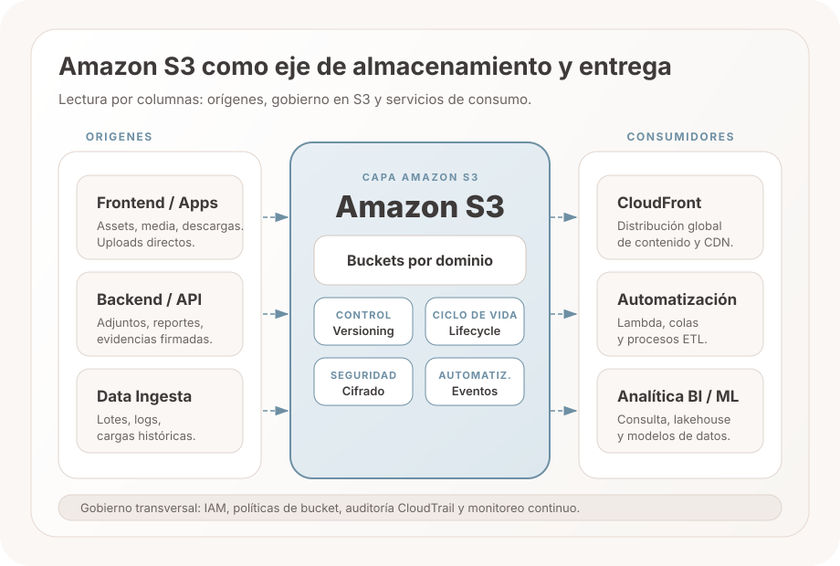
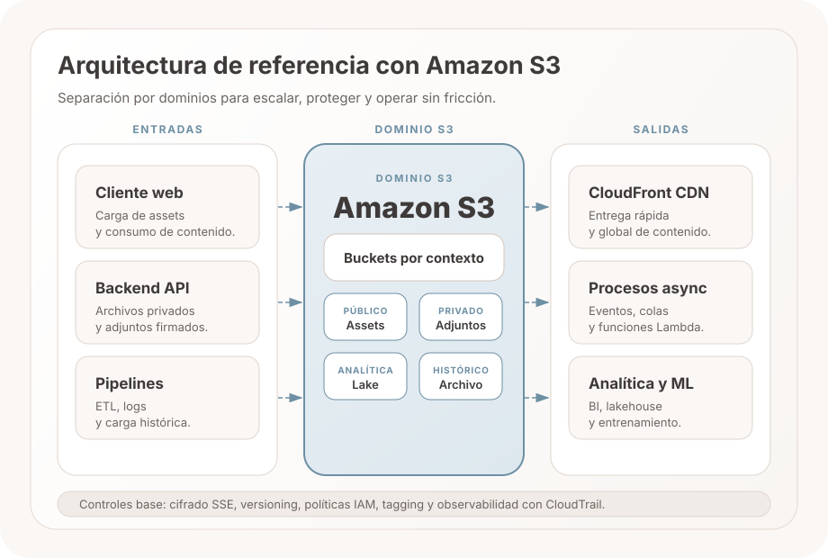
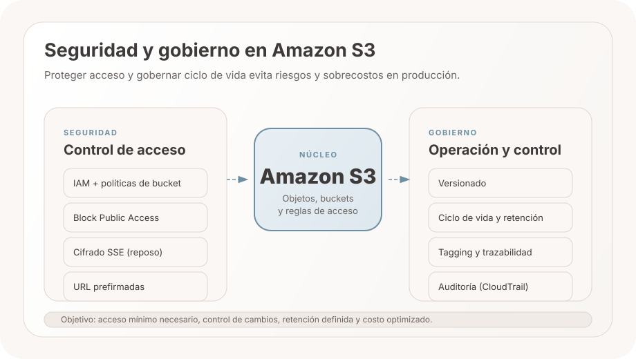
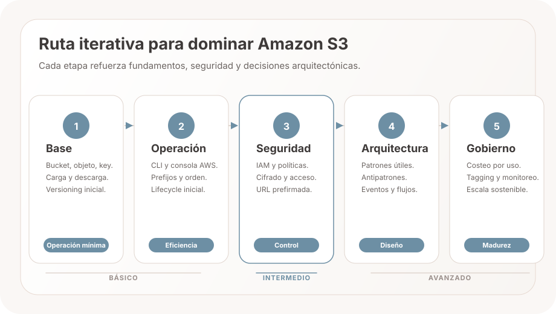

Buckets, objetos, claves y metadatos accesibles por API.
Amazon Web Services
Amazon S3 en arquitectura de software
Amazon S3 no es solo un lugar para guardar archivos. Es una capa de almacenamiento de objetos que permite entregar contenido, desacoplar binarios, activar procesos y gobernar datos a escala.
CDN, cargas directas, eventos y consumo analítico posterior.
IAM, versionado, ciclo de vida, cifrado y control por dominio.

Guion expositivo
De qué hablar cuando presentes Amazon S3
El recorrido prioriza ideas defendibles en clase: qué es S3, cómo entra y sale la información, cómo se integra, cómo se aprende, cómo se cobra y cómo cerrar con una conclusión sólida.
1. Fundamentos
Qué es Amazon S3 y por qué no es un sistema de archivos
Amazon S3 es un servicio de almacenamiento de objetos. Guarda datos dentro de buckets y cada objeto se identifica por una clave o key, no por carpetas físicas ni por un sistema de archivos tradicional.
Definición corta
Permite almacenar y recuperar cualquier cantidad de datos con acceso por API, alta durabilidad, seguridad configurable y escalabilidad sin administrar discos o servidores.
Qué debes explicar
- Bucket: contenedor donde se almacenan los objetos.
- Objeto: archivo o dato con contenido y metadatos.
- Key o clave: identificador único del objeto dentro del bucket.
- Prefijo (prefix): convención que simula carpetas, pero no crea jerarquía real.
- Acceso: lectura y escritura por HTTP o API, por ejemplo con operaciones PUT y GET.
Caso de uso: repositorio académico
Una universidad guarda material de clase en un bucket por facultad y organiza los archivos por asignatura y semestre.
- Entrada: docentes suben guías, PDFs y rúbricas.
- Consulta: estudiantes acceden por URL según permisos.
- Aprendizaje clave: la “ruta” visible es la clave del objeto, no una carpeta física real.
2. Casos de uso
Casos de uso de entradas y salidas en Amazon S3
Este bloque muestra aplicabilidad real: qué tipo de dato entra a S3 y qué componentes lo consumen después dentro de una solución de software.
Entradas (aplicabilidad real)
- Públicos: un PDF de convocatoria se publica para descarga abierta.
- Assets: imágenes, CSS y JavaScript del landing institucional.
- Privados: certificados y anexos de estudiantes con acceso por rol.
- Analítica: logs de uso y eventos de navegación para BI.
- Histórico: actas y soportes antiguos para retención y auditoría.
Salidas (aplicabilidad real)
- CloudFront CDN: entrega contenido rápido a estudiantes en varias ciudades.
- Procesos asíncronos: al subir un archivo se dispara validación o notificación.
- Analítica y ML: dashboards académicos consumen datasets consolidados.
- Aplicaciones internas: microservicios consultan y escriben objetos según IAM.
Caso real integrado: portal académico
- El landing y sus recursos públicos se sirven desde S3.
- Los estudiantes cargan documentos privados de matrícula y bienestar.
- La plataforma registra eventos y logs en S3 para análisis institucional.
- La evidencia de años anteriores se mueve a histórico por retención.
- CloudFront acelera la entrega y procesos asíncronos validan cargas.
- Portales y microservicios internos consumen objetos según su rol IAM.
En simple: En un caso real, S3 recibe datos de múltiples fuentes y los convierte en distribución, automatización y analítica para toda la arquitectura.
3. Arquitectura
Cómo encaja en una arquitectura de software
S3 aparece cuando el sistema necesita una capa compartida entre captura, almacenamiento, distribución y procesamiento posterior.


Patrones recomendados
- Origen de assets con CDN.
- Carga directa con URL prefirmada.
- Data lake por capas.
- Eventos que disparan procesos.
Antipatrones
- Tratar S3 como filesystem POSIX.
- Usar un bucket público por comodidad.
- Mezclar entornos y dominios sin separación.
- Olvidar reglas de ciclo de vida y costos de solicitudes.
Decisiones clave
- Separar buckets por dominio o entorno.
- Diseñar acceso con IAM y políticas.
- Definir nombres, tags y responsables.
- Usar S3 para desacoplar binarios del backend transaccional.
Caso de uso de arquitectura orientada a eventos
Cuando un estudiante sube una evidencia al portal, S3 activa procesos sin bloquear la aplicación principal.
- Paso 1: se almacena el archivo en S3.
- Paso 2: un evento notifica a un proceso asíncrono.
- Paso 3: se valida formato, se genera trazabilidad y se actualiza el sistema académico.
En simple: S3 aporta valor cuando se diseña como capa común de objetos y no como un disco improvisado dentro del sistema.
4. Costos
Cómo se cobra Amazon S3 y cómo tomar mejores decisiones
El costo de S3 depende del patrón de uso. La decisión correcta no es “la clase más barata”, sino la clase adecuada para el acceso real.
Simulación visual
Gráfico interactivo del costo relativo
Mueve el control para ver cómo cambia el peso relativo de almacenamiento, solicitudes, recuperación y transferencia según el patrón de acceso.
Respaldo activo
Lecturas ocasionales y recuperación moderada.
Composición relativa del costo en el escenario seleccionado.
Almacenamiento
50%
Solicitudes
18%
Recuperación
10%
Transferencia
22%
Qué se paga
- Almacenamiento por volumen y clase.
- Solicitudes API como PUT, GET o LIST.
- Recuperación en clases de archivo.
- Transferencia de salida y servicios asociados.
Qué suele mover el costo
- Frecuencia real de acceso.
- Cantidad de objetos pequeños.
- Egreso de datos fuera de AWS.
- Retención, replicación y ciclo de vida.
Cómo optimizar
- Elegir clase según patrón real de acceso.
- Aplicar ciclo de vida por antigüedad del dato.
- Reducir egreso con caché y distribución eficiente.
- Usar etiquetado para identificar servicios costosos.
Caso de uso de decisión por costo
Una coordinación tecnológica clasifica la información según frecuencia de acceso para pagar solo lo necesario.
- Documentos activos: se prioriza disponibilidad inmediata.
- Respaldos mensuales: se envían a clases de menor costo.
- Histórico de auditoría: se conserva en almacenamiento de archivo.
En simple: El costo de S3 se controla alineando cada dato con su patrón de acceso, su tiempo de retención y su necesidad real de disponibilidad.
5. Ruta de aprendizaje
Plan iterativo para dominar S3 por etapas
Esta ruta permite practicar de manera progresiva. El usuario puede mover los controles y ver qué estudiar, qué practicar y qué entregar en cada nivel.

Simulación de progreso
Ruta interactiva de básico a avanzado
Selecciona una etapa para ver objetivos, prácticas y entregables sugeridos para exposición o proyecto.
Intermedio
Semanas 3 y 4
Objetivo de etapa
Diseñar acceso seguro y operar el ciclo de vida básico del bucket.
Conceptos clave
- Políticas de bucket e IAM.
- Versionado y URL prefirmadas.
- Cifrado y separación por entorno.
Prácticas recomendadas
- Crear un flujo de carga controlada desde frontend.
- Aplicar reglas de ciclo de vida por antigüedad.
- Registrar evidencias para sustentación técnica.
Caso de uso de aprendizaje por etapas
Un equipo de estudiantes avanza en cuatro semanas de práctica aplicada con evidencias concretas.
- Básico: construyen un bucket y organizan objetos por prefijos.
- Intermedio: aplican control de acceso y versionado.
- Avanzado: conectan eventos para procesamiento automático.
- Aplicado: presentan un caso completo con decisión técnica y justificación de costo.
En simple: La ruta de aprendizaje funciona mejor cuando cada etapa tiene objetivo, práctica y evidencia concreta.
6. Cierre
Conclusión para defender el valor de S3 en arquitectura
Este cierre resume la idea central de la exposición: S3 no es solo almacenamiento, es una pieza de arquitectura que conecta entrada, proceso, salida y control.
Qué es S3 en una frase
Un servicio de almacenamiento de objetos, masivo y durable, accesible por API y diseñado para escalar sin administrar infraestructura.
Por qué impacta arquitectura
Desacopla binarios, habilita integración con eventos, distribuye contenido y soporta analítica con un mismo punto de referencia.
Qué decisión deja la exposición
Diseñar buckets, acceso y clases de almacenamiento según dominio y patrón de uso, no por conveniencia del momento.
Caso de uso de cierre expositivo
El equipo cierra su presentación mostrando decisiones claras, riesgos controlados y trazabilidad del dato.
- Seguridad: acceso restringido por roles y políticas.
- Operación: versionado y ciclo de vida definidos.
- Sustentación: cada decisión se conecta con arquitectura, costo y valor del negocio.
En simple: Amazon S3 almacena, integra y gobierna; su valor aparece cuando se diseña con criterio arquitectónico y no como un repositorio improvisado.
Mensaje final para exponer: Amazon S3 es importante porque permite almacenar a escala, integrar servicios y mantener control sobre datos, riesgos y costos.
7. Fuentes
Referencias oficiales para sustentar la exposición
Estas fuentes de AWS te permiten validar conceptos, resolver preguntas en clase y justificar decisiones técnicas.
En simple: Dejar fuentes oficiales al cierre fortalece la exposición y transmite rigor técnico.